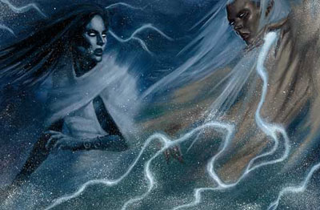
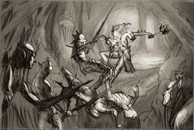
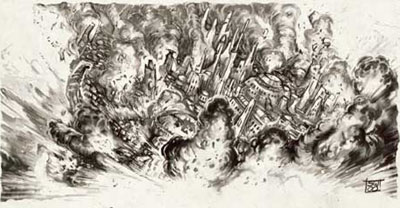
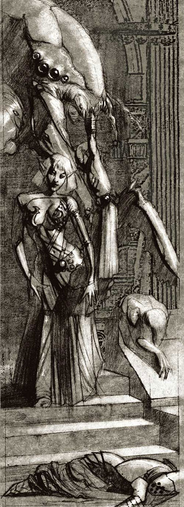
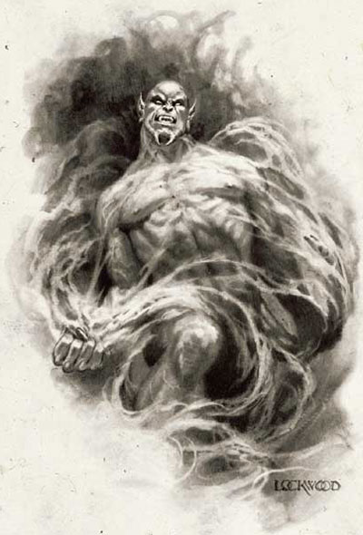

原载于《Forgotten Realms Campaign Setting》
在费茹这块古老的大陆上，到处是久已消亡的帝国和奇迹，一个接一个，各个伟大的种族兴起又衰落，最终迎来了人类纪元时代the Time of Humans－即费茹历史上最近的3、4千年。即使在这个新纪元内，伟大的帝国和闪耀的王国兴起又沉沦，都化作历史的灰尘，只留下神秘的遗迹和残存的资料标记着它们曾经存在。
现在的日期是DR1732年�Dthe Year of Wild Magic�D夏至，Flamerule已经过去，Eleasias－Highsun－正在来临。如果DM喜欢的话，仲夏夜的第二天会举办 Shieldmeet节，这一天是费茹战役的不错的开端。
创世史creation of the world
因为神话和传说很少能被历史学家所支配修改，所以在很多费茹的传说中共同提及的某些特定的传奇已经在人们心中成为了真实的历史。按这样算来，费茹的历史从 Lord Ao创建现在承载着托瑞尔（Toril）的世界开始。创世之间是一段永恒虚无的时期a period of timeless nothingness，光与暗是两个相互隔离的东西，彼此之间是薄雾般的阴影领域a misty realm of shadow。最终阴影的本质融合诞生了一对双胞胎的美丽女神，然而又彼此对立，一个是光明，一个是黑暗。两位女神创造了天堂之躯体the bodies of the Heavens，给裳提阿（Chauntea）�D托瑞尔（Toril）的具现化形态�D以生命，托瑞尔（Toril）被苏伦（Selune）女神的冰冷的光辉照亮，因莎尔（Shar）女神的拥抱而变暗。但是现在依然没有热量存在。
光与暗之战war of light and darkness
裳提阿（Chauntea）开始变温暖，逐渐可以自己培育出生命和生物，两位女神对这点持有不同的观点。因为两人的战斗，从她们的神性中产生了战争、疾病、暗杀、死亡等诸神，同时一些堕落的力量也随之诞生。
苏伦（Selune）来到位于世界上面的火之位面a plane of fire，使用纯洁之火点燃了天堂躯体中的一个以给裳提阿（Chauntea）带来温暖，莎尔（Shar）被激怒了，并且开始准备扼杀世界上的所有光与热。受到了极大的致命的减弱，苏伦（Selune）把神圣的魔法之质the divine essence of magic从自己身上撕落将其掷向自己的妹妹（姐姐？？），这股能量撕裂了莎尔（Shar）的形体，与莎尔（Shar）的类似的能量混和成一体，形成了魔法女神蜜斯翠（Mystryl），蜜斯翠由光与暗共同组成，但是更喜欢自己的第一位母亲，她在这场战斗中起到了平衡的作用，并使得两姐妹建立了并不稳定的休战。
莎尔（Shar）依然保存了自己的强大的力量，在黑暗中承受着孤独，并且不停地策划着复仇。苏伦（Selune）逐渐变大，越来越衰落，但是她从自己的女儿和儿子甚至是从外界闯入的神身上吸取能量。她们的战斗一直持续到今天。

Shar battles Selune
时间的延续Advancing the years
第一个被遗忘国度游戏产品，FRCS（被爱称为the Old Gray Box）于1987年出版，并将战役时间设定为DR1356。经过以初版和第二版（ADnD）为基础的近百个游戏之后，设定的时间线被延续到 DR1371，FRCS的新版本除了为新的DnD游戏更新设定外，还把时间线延续到DR1372中期。
从此，我们希望每有五年的游戏产品和小说出现就要FR的时间线向前延续两年，也就是说，在我们的现世世界里每过5个月，费茹就向前发展2个月。
创造者种族the Creator Races
当众神混战时，很多高智力的种族在托瑞尔（Toril）兴起。当今的学者称其中最强大的五个种族为创造者种族。第一个是蜥蜴族，他们创建了广阔却短暂的文明，幸存者大都进化为那加、蜥蜴人、穴居人或其他的生物。
创造者种族中最高级的是龙，它们有着强大的力量，可以袭击其他种族的大城市而不受任何伤害。龙统治着地表的世界，占据着极大的领土，并且彼此为领地、配偶和地位而争斗。仅仅在那些低级的种族熟练掌握了魔法之后这些巨大的公鸭才吃到些苦头，但是直到今天不管其他种族如何发展，龙依然在这个世界上举足轻重。
一种水生的种族－ShapeChangers进化为两栖，并于蜥蜴文明的末期爬上陆地，他们建立了自豪的城市。这些生物为蜥蜴种族的衰败出了大力，但是自己却跌入了沙华鱼人，人鱼、梭螺鱼人的重压之下。该种族的幸存者进化成了海中的洛卡鱼人和陆地上的变形怪。
所知最少的创造者种族是居住于森林和其他多树木地区的森林居民，他们和自然融洽地生活在一起，并且对外界不留什么痕迹。人们相信他们的文明在一场由一股巨大的或魔法的力量造成的灾难后终结了。他们的子孙现在是那些小妖精sprites和其他生活在托瑞尔（Toril）的秘密之处的小型的woodfolk。
最后的创造者种族，也是在原始时代生活时间最长的，是人类。在环境允许的情况下，人类会以强大的适应性和灵活性以难以置信的速度和效率创造奇迹。在五个创造者种族中，只有人类才维持着连续的文明。那些偶尔的巨龙彼此间的战斗，还有其他的种族都已从世界上消失或者散入各个子种族中。
最初的兴盛the First Flowering
随着魔法被发现，一些天才的人开始位面旅行的尝试，联系并参观其他的世界。通过这些早期的传送门一些其他世界的种族来到这里－矮人、树人、精灵和吸灵怪。其他的种族出线了，不管是因为杂交、位面移民还是魔法传送。撒伦精怪（Sharn）和费林魔葵（Phaerimm）被认为就是在这时出现的，并且很可能是产生自魔网（the Weaves）的最初的能量。
新来者the newcomer
半身人、侏儒和巨人在托瑞尔（Toril）上诞生。强力的巨人建立了巨大的王国并与龙进行战斗，但是他们的文明却并没有大到可以让他们占据创造者种族的一席之地。类哥布林生物在发现这些传送门之后也小股小股地移居到托瑞尔（Toril），其他世界的人类也移居至此，例如Kara-Tur、Maztica和扎卡拉（Zakhara）。非类人生物比如眼魔、wemics和半人马也纷纷在此定居。飞马和其他飞行生物比如aarakocras占据了天空，当然是在龙睡着的时候。
在所有的到达者中，矮人和精灵被证明是最足智多谋的。每个种族都学会了文化、工艺和商业，在托瑞尔（Toril）的地表和其他大陆创建着强大的王国。这一事件被称为the First Flowering，奠定了到今天依然大量存在的各种族文明的基础。
友善的侏儒充当了矮人和精灵之间的调停人，用稀有的货物和异种军备来换取魔法和知识。在这段时间内，善良的类人种族的王国发展成为以部族、皇室或家庭为基础的社会结构，各自集中精力于特定的技术和理想。这些集团最终发展成为只有王国溃灭才可停止的竞争状态。
皇冠之战 the Crown War
精灵移居到永聚岛（Evermeet）的岛上，还占据了后来的月影岛（Moonshaes）的一部分，并且向后世所称的精灵高级魔法elven high magic迈出了第一步。这种强力的奥术使得精灵与龙战斗并在历史上第一步赶退了它们。拥有着强大的魔法和众多的同盟，精灵们建立了巨大的城市和强大的王国。但是他们却不知道最大的威胁正来自于他们本族内部。
激怒精灵的真正的火花并不为人知。今天我们所知道的冲突只是包括所有精灵政权在内延续时间达三千年的皇冠之战the Crown War。所有的王国全部沉沦，无数的精灵在战争中无谓地消耗着自己的生命。由于他们的忠诚的腐败，精灵女神艾尤释涅（Araushnee）（现在的罗丝 Lolth）带着伊力斯瑞(Ilythiiri)的黑暗精灵被放逐到幽暗地域(Underdark)，成为了现在所知的Drow。
在皇冠之战结束时，仅仅有两个精灵政权保留着完整无缺的文明幸存下来，凯尔特米尔（Keltormir）精灵居住在与他们同名的森林中（覆盖着现在的安姆（Amn）、泰瑟尔(Tethyr)、卡林森（Calimshan）），疲于战争，他们想安居于现在急需的和平中。不幸的是，很快他们又与来自南方的一个新的人类政权开始了冲突。伊尔法郎（Illefarn），一个接近剑海(the Sea of Swords)的精灵政权，与游牧部族的精灵和人类保持着和平的联系，精灵用魔法知识来与人类交换食物和货物。这一事件标志着人类时代the age of humans的开始，因为魔法帝国耐色瑞尔(Netheril)诞生了。

The drow invasion of Battledale
耐色瑞尔Netheril
耐色瑞尔最初起源于7个渔村，为了保护自己而走到一起。耐色瑞尔注定会变得令人难以置信的强大，也注定会因骄傲而溃灭。被自己的精灵邻居教导了魔法的基础，耐色瑞尔人在这个领域内开始了稳步地发展，同时在与伊尔法郎（Illefarn）精灵以及一些叶尔兰（Eaerlann）的年轻的精灵聚集地的亲密联系中也受益匪浅。The four people（4个人？？）从事于贸易，并且与那些每过几年就从世界之脊（the Spine of the World）上蜂拥而来的兽人作战。耐色瑞尔经受住了精灵邻居之间的战争，并且通过一个偶然的发现走上了伟大和毁灭的道路。
耐色之卷The Nether Scrolls
一次无名的冒险发现一部魔法著作，其中包含着这一领域的极大的秘密。耐色之卷（The Nether Scrolls）在施法、制造魔法物品和构装体、位面的联系和构造、甚至于宝物的制造上给人以极大的洞察力。尽管在随后的两千年里这些卷轴不会丢失就是被盗，但是它所记载的信息却改变了整个耐色瑞尔社会。
耐色瑞尔的初出茅庐的施法者们学习了卷轴，并且创造出了各种托瑞尔（Toril）从来没有过的魔法。耐色瑞尔的法师Ioulaum创造了 mytballar法术，这个法术可以给附近的物品以力量，而不必消耗施法者创造魔法物品所必需的能量支出。这个法术也可以通过切开山脉的顶部来建造飞行城市。耐色瑞尔的居民都被带到了这种魔法维持的飞行的领土中，而远离那些野蛮人和邪恶类人的部落。每个居民都辅修魔法，耐色瑞尔与附近的精灵和矮人进行交易，不断地扩展自己的影响范围。
费林魔葵的冲击The Phaerimm onslaught
对耐色瑞尔力量的检验来自于费林魔葵（Phaerimm），一种生活于地表下的魔法生物。这个邪恶的种族遭受了耐色瑞尔的魔法攻击，出于报复，他们开始在耐色瑞尔的土地上施展吸吮魔法和生命magic-drain、life-drain的法术，将繁荣的原野和森林变成了贫瘠的沙漠。人们最终察觉到这种奇怪的变化背后的真相，于是一场长期的魔法大战爆发了。最终对魔法的吸取开始影响到城市上正在作用的法术。慢慢地，大奥师离开了去寻找魔法没有变得扭曲的地方，而普通的居民因生活的环境变成了沙漠而逃离了。
Karsus，一个令人难以置信的天才大奥师，在奇异的法术方面取得了很大进步，他认为在自己的国家需要他时有义务和它并肩战斗。Karsus施展了一个他研究了十年的法术，他创建了与蜜斯翠（Mystryl）的连接，这样他可以偷取蜜斯翠的力量而可以成为神。施法之后，他的身体因注入神力而膨胀，他的心中也被不可思议的知识所填充，随即他已知道自己犯下了一个致命错误。蜜斯翠控制着魔网（the Weaves）的能量，坚持不懈地修复因暴用魔法的耐色瑞尔和费林魔葵（Phaerimm）而引起的对魔网（the Weaves）的伤害，如果偷走她的神力，Karsus将直接威胁到费茹大陆魔法的存在，因为他还没有准备好。
蜜斯翠在伤害变得不可挽救之前牺牲了自己拯救了魔网（the Weaves）。这切断了她与Karsus的连接，石化了Karsus，并且世界上所有的魔法都暂时失效。耐色瑞尔飞行的城市坠落了，Karsus的石化形体�D�D包含着一个枯萎的全知者－�D注视着他所关心的一切都因他的愚蠢而被毁灭。但是如果不论这次大灾难，Karsus是第一个只用一个魔法就可以获得神格的人。

The fall of Netheril
魔法女神重生，化身为蜜斯拉（Mystra），并且在重建魔网(the Weaves)中恢复了三个飞行城市�D埃诺瑞亚（Anauria）、埃斯伦（Asram）和哈伦达斯（Hlondath）�D这三个城市在Karsus行动时远高于地面。新的魔网(the Weaves)严格了施法的需求，限定了力量的高度和破坏的潜力。蜜斯拉的牧师被告知耐色瑞尔的坠落来作为一个警告，因此这种事可能再也不会发生。
期间，坠地的城市的幸存者为了躲避费林魔葵（Phaerimm）、类人种族和沙漠的侵袭，在南方建立了耐色瑞尔的姐妹王国。人类的最大的帝国灭亡了，只留下破坏的遗迹和如今称为埃诺奥克（Anauroch）的魔法创造的荒地。
毁灭的帝国Fallen Empires
此时，在遥远的东方，紧挨着耐色瑞尔疆界的地方其他的王国也成立了。其中最大也是最老的是艾玛斯卡（Imaskar），一个被术士组织（命名为艾玛斯卡瑞（the Imaskari）或发明者（the Artificers））统治的国家，位于如今洛林沙漠（the Raurin Desert）所在的地方。因力量和骄傲而固执，艾玛斯卡（Imaskar）拒绝向任意神低头，他们发明强力的魔法，钻研奇异的工艺，将类人生物、龙和其他奇怪的生物驱逐出他们的家乡。在当他们的人口在一场可怕的瘟疫中大批死亡时，艾玛斯卡瑞（the Imaskari）创造了一对连接到另一位面的传送门，并且奇袭了那里从而获得了无数的奴隶，在奇袭结束后，他们关闭了传送门，并且使用强力的魔法永久地封死了这两个位面的物理连接。这些奴隶最终联系到了他们的神,他找到了一条通过星界（the Astral Plane）到达托瑞尔（Toril）的路，从而绕开了发明者（the Artificers）设置的障碍，最终摧毁了这个位于洛林（Raurin）的帝国，这场战争的后果就是导致了洛林沙漠（the Raurin Desert）的诞生，获得自由的奴隶向西迁移建立了默尔霍兰德 （Mulhorand）和恩特（Unther）。
在耐色瑞尔坠毁前六个世纪时，在坠星海（the Sea of Fallen Star）的东部有两个魔法帝国兴起。纳凡尔（Narfell），辽阔而凶暴，非常之可怕，因为其领主与恶魔demons签订了协定，在战斗时这些恶魔会与纳凡尔战士一起作战。萝玛萨（Raumathar），纳凡尔（Narfell）的邻居，也同样地强大，以自己的战斗法师而闻名。这两个帝国不时地发生冲突，纳凡尔（Narfell）甚至发动了对默尔霍兰德（Mulhorand）和恩特（Unther）的入侵，但是被击退了。最终纳凡尔（Narfell）和萝玛萨（Raumathar）在一场大战中两败俱伤，这场战争包括了恶魔、龙，还有可以瞬间摧毁整座城市的魔法，两个帝国毁灭了，形成了无尽荒地（the Endless Waste）。直到今天，纳凡尔（Narfell）从前所在的大陆依然被某些人成为恶魔大陆（the Demonlands）。
耐色瑞尔的幸存城市－埃诺瑞亚（Anauria）、埃斯伦（Asram）和哈伦达斯（Hlondath）在埃诺奥克（Anauroch）的边缘定居，可怜地生活在他们父辈荣耀的阴影下。埃斯伦（Asram），以法师之城而闻名，继承了耐色瑞尔的精神，可惜不是其智慧，在三百年后毁灭于一场瘟疫。埃诺瑞亚（Anauria），以其魔法和造剑技能而文明，在耐色瑞尔坠毁后五百年内被摧毁。哈伦达斯（Hlondath）存活的时间最长，他放弃了魔法，变成了樵夫和牧羊人的国家。在埃诺奥克（Anauroch）发展的一切最终都烟消云散，耐色瑞尔的其他难民逃到了更远的南方，建立了哈鲁阿（Halruaa），至今仍然健在。
其他没有记载和知之甚少的帝国包括曾经与耐色瑞尔交易的矮人王国丹佐（Delzoun），还有精灵王国伊尔法郎（Illefarn）。很多精灵的社会在精灵们撤退到永聚岛（Evermeet）的避难所时消失了，但是这些并不是真正的毁灭的帝国,因为精灵们是自主地离开地,而不是被战争或灾难所摧毁。
古老的帝国the Old Empire
一个由默尔霍兰德（Mulhorand）的反叛的法师开启的传送门连接到了一个野蛮的兽人居住的世界。这些兽人利用这个传送门袭击了费茹，蹂躏了王国，屠杀了成千上万的人。默尔霍兰德（Mulhorand）和恩特（Unther）的神王God-king与这些兽人展开了战斗，兽人们通过召唤自己的神的具现化来进行报复，这场冲突被称为兽人之门战役（the Orcgate Wars），在战争中，兽人之神格乌什（Gruumsh）杀死了默尔霍兰德的太阳神瑞（Re），这是这个大陆上所知的第一个杀神者。许多恩特的神也被杀害。人类神最终还是获胜了，兽人们不是被屠杀，就是被驱逐到北方或西方。
神赛特（Set）和奥斯瑞斯（Osiris）为继承瑞（Re）而战，最终赛特暗杀了他的竞争对手。哈鲁斯（Horus）吸收了瑞（Re）的神力变成了哈鲁斯- 瑞（Horus-Re），打败了赛特，并把这个邪恶的神扔到了沙漠中。艾赛斯（Isis）复活了奥斯瑞斯，所有的默尔霍兰德的神都联合在哈鲁斯-瑞之下，两个古老的王国开始重建自己的力量，恢复自己的创伤。在恩特（Unther），盗贼之神恩利尔（Enlil）让位给自己的儿子吉尔吉姆（Gilgeam）后消失了，艾什塔（Ishtar），恩特唯一存活下来的神，把自己的力量传给了艾赛斯，也消失了，两千年里吉尔吉姆逐渐变坏，用暴政统治着恩特。
长期的衰败the Long Decline
长期地安于发展并且无意征服远方，默尔霍兰德（Mulhorand）和恩特（Unther）开始了国内的斗争，并且附属国也怀有不满。经过了接下来的一千年后，恩特的北方城市宣布独立，在其西部城市也宣布自己为独立国家彻森塔（Chessenta）时，恩特的国土缩小了一半。默尔霍兰德（Mulhorand）则经历了另一个法师的叛乱，导致失去了特伊（Thay）省，尽管后来默尔霍兰德（Mulhorand）发动了战争要收复它，但是最终不得不宣布特伊（Thay）成为一个独立自主的国家，赛姆法（Semphar）和莫高姆（Murghom）也赢得了自己的独立，默尔霍兰德 （Mulhorand）和恩特（Unther）逐渐地成为了“活着的”毁灭帝国。
卡林森Calimshan
卡林森（Calimshan）有着很久的历史，甚至比耐色瑞尔还要久，但是它从来没有达到过耐色瑞尔的魔法的高度。在费茹南方的历史上卡林森（Calimshan）是一股强劲的力量，因其强大的人口和军事。
卡里姆（Calim），一个巨灵贵族，当他、他在巨灵贵族中的追随者和仆人还有成千上万的人类奴隶从另一个位面达到这里时创建了这个帝国。他们击退了龙的攻击，并于邻近的精灵和矮人的王国建立了国界协定。在卡里姆达到一千年后，一个叫做迈姆蒙（Memnon）的惟利是图的火巨灵创造了一个通往托瑞尔（Toril）的传送门，并在卡里姆的帝国北方建立了自己的领地。
共存三个世纪后，两个国家开始了战争，并且天火时代（the Era of Skyfire）开始了，战斗延续了四百年，这次战争被他们的精灵邻居终止了，精灵们用精灵高级魔法将双方的巨灵领主和大部分巨灵随从融合在一起，形成一块巨大的宝石，后人称为卡里迈姆蒙水晶（the Calimemnon Crystal）。最终两个帝国的人类通过矮人邻居的帮助驱逐和束缚了剩下的巨灵和火巨灵。人类将他们的联合政权称为考冉森（Coramshan）。
经过接下来的四百年，经历了很多不同的名字和政府，考冉森（Coramshan）拓展疆土，覆盖了今天的安姆（Amn）和泰瑟尔(Tethyr)，整个蒸汽之湖（the lake of Steam）区域，南部直达楚尔坦半岛（the Chultan peninsula）和夏亚（the Shaar）的the Landrise。他们的扩张使得他们忙于与札姆达斯（Jhaamdath）（现在的琼达斯（Chondath））、矮人王国杉娜塔（Shanatar）以及一些小的精灵王国作战。尽管诡计、叛乱、怪物和征服使得考冉森的疆界经历着几次崩溃和扩张（最终形成了现在的版图），考冉森一直维持着他的商业运作，将货物从楚尔坦半岛（the Chultan peninsula）运到北方，然后再从北方运送货物回来。
琼达斯的兴起the rise of Chondath
在考冉森（Coramshan）解放后不久由人类建立了琼达斯（Chondath），札姆达斯（Jhaamdath）的这个王国开始不过是位于现在的琼达尔森林（Chondalwood）北方的以渔业和伐木业为生的村庄的联合体。札姆达斯和中心的Twelve Cities of Swords沿着大陆和海迅速发展，并且当国界抵达蒸汽之湖（the lake of Steam）时与考冉森发生了冲突。在双方都同意放弃竞争这座湖泊之后达成了和平协议。当时考冉森（Coramshan）向西而恩特（Unther）向东发展，札姆达斯根本无法扩张除非它跨过坠星海（the Sea of Fallen Star），于是它把精力集中于贸易、边疆守卫和跨过内海（the Inner Sea）向北扩张。札姆达斯定居在现在的因布图（Impiltur）、赛斯克（Thesk）、赛斯派茨（Sespech）、图米斯（Turmish）和瀚土（the Vast），因贸易而国福，因广阔和坚固而闻名。
此时，琼达尔森林的伐木页激怒了森林里的精灵，种族的战争开始了，二十年里，森林中的所有的精灵城市除了一个从前就被破坏，十个精灵城市中的九个被屠杀。出于报复，幸存的精灵法师使用精灵高级魔法召唤了巨大的海浪冲刷了札姆达斯所有地区，使那里变成了现在的维洪海域（the Vilhon Reach）的海岸线。
少量的幸存者逃到了坠星海（the Sea of Fallen Star）的北部沿海，其时，其他被冲散的幸存者返回原地，创建了－一个商业国家，但是后来被战争和瘟疫所摧毁，现在的琼达斯只是从前伟大王国的一个最黯淡的影像，但是琼达斯的后代扩展到西方建立了强大的山比亚（Sembia）和卡米尔（Cormyr）。
团结和分裂的年代Age of Unity and Dissolution
来自谷地（Dalelands）的人类移民和科曼索（Cormanthor）的精灵开始交往紧密，共同建立了立石（the Standing Stone）来作为彼此尊重各自生活的象征。尽管经历了超过十三个世纪的混乱和痛苦，这些石头依然耸立着。下面是从早期的帝国到现在的一些相关事件的介绍。
费茹的历史上所有种族都经历了无数次的尝试，想要彼此和平地生活在一起。其中最突出的两个是在科曼索（Cormanthor）森林的米斯・札诺（Myth Drannor）的精灵首都和位于宝剑海岸（the Sword Coast）的费勒姆（Phalorm）－三冠之国（Three Crowns Kingdom）（因为是人类、精灵和矮人联合领导的）。然而这两个王国也有各自的国内压力，最终他们的领导权被兽人和类人种族的入侵（在米斯・札诺，是外界extradimensional的生物）而剥夺，但是这些王国依然是各种族可以一起生活兴旺的理想的证明。
一个神的事件，现在被称作破晓之乱（the Dawn Cataclysm），引起了神中的无数变更，影响到托瑞尔（Toril）的唯一可知的变故是太姬（Tyche）教会的分裂和女神贝莎巴（Beshaba）和泰摩拉（Tymora）的兴起，这一变故发生在DR8世纪中叶。
破晓之乱（the Dawn Cataclysm）前的几个世纪（凡人难以准确标识这些包括神在内的事件的时间），第一任行政官（the first Magister），至高神阿祖斯（Azuth the High One）与他的竞争者全知神Savras the All-Seeing为了至高权进行战斗，这次战斗维持了很多年，最终阿祖斯Azuth将Savras监禁在一根法杖中。
该时期内其他的事件均与破晓之乱有关系，比如恩特（Unther）的第二帝国的毁灭the ending of the second empire of Unther，竖琴手the Harpers的形成，恶魔王Iyachtu Xvim the Baneson（班恩之子）到达西门（Westgate），摩安多（Moander）的关押。
动荡之年the time of troubles
为了寻找超过其他神的力量，班恩（Bane）（从前的人类形体）和米尔寇（Mrykul）（从前的死亡之神）从Lord Ao那里偷取了命运之石版（the Tablets of Fate）�D�D规定费茹所有神职责的神圣记录。这一事件使Ao相信神们对自己信徒漠不关心，而只关心彼此间的争斗，为了惩罚众神，并为了让他们更加关心自己的追随者，Ao强令神离开自己的领域，成为被称作avatar的凡人形态。
The Avatars
Avatars在地面旅行，与凡人交往（有些比较残忍），苦苦寻找返回自己领域的道路，因为正常的道路已经被禁止了。这一时期是费茹历史上最为混乱的时期，被称作the Time of Troubles、the Godswar或the Avatars Crisis。
众神遭到了突发的灾难，只有海姆（Helm）被保留了神力，并被Ao命令保卫通往外界the Outer Planes的道路，因为海姆成功的保卫， the Avatars Crisis的许多破坏均是出自他之手，蜜斯拉（Mystra）被杀，并且其本质与大地融合，造成了魔法的不稳定作用，并且在许多地方发生了野魔法wild magic和死魔法dead magic（应该是指魔法能力凝滞使得魔法无法作用吧）区域。
甘德（Gond the Wonderbringer）以侏儒形态降临到兰滩（Lantan）的海边，处于对这个避难所的感谢，他把smokepowder的秘密教给了兰滩人。泰摩拉（Tymora）出现在自己的神庙里，因为他的出现使得该城市避免了多次毁灭，艾布兰多（Ibrandul），洞穴之神，被莎尔（Shar）秘密杀害，其神职被偷走。
玛拉（Malar）与诺班尼奥（Nobanion）战斗，被古维隆・风暴（Gwaeron Windstorm）逮捕。山达科尔（Shaundakul）毁灭了一个次级的兽人神的avatar，莎莉斯（Sharess）取代了一个卡林港（Calimport）的高级官员的宠妾的形体，并被淑娜（Sune）从莎尔（Shar）的影响下解救出来。红骑士（The Red Knight）出现在泰瑟尔(Tethyr)，并帮助这个国家击败了来自Wealdath的怪物。郝厄（Hoar）杀死了冉姆门（Ramman）－恩特的战争之神－但是冉姆门的神职却被安赫（Anhur）所取代。克兰哥丁・银须（Clangeddin Silverbeard）与Labelas Enoreth因误会在罗瑟姆岛（Ruathym）上进行战斗。在深水地区（Waterdeep），莎尔（Shar）和苏伦（Selune）以凡人形态开始了她们无尽的战斗中的新的一轮。沃金（Waukeen）消失了，他的同盟里拉（Lliira）宣布自己为沃金神职的保管者。小神Iyachtu Xvim的avatar－班恩的半恶魔后代－被散提尔堡（Zhentil Keep）监禁。恩特（Unther）的神王吉尔吉姆（Gilgeam）被竞争对手提阿玛特（Tiamat）所杀，结束对这个国家长达两千年的统治。

The Fall of Blingdenstone
凡人The Mortals
与米尔寇达成了联盟，巴尔（Bhaal）绑架了凡人法师午夜（Midnight）并发现了命运之石版中的一块，但是在波斯卡桥（the Boareskyr Bridge ），凡人希瑞克（Cyric）用剑God’s Bane(马斯克（Mask）的Avatar)杀死了巴尔，希瑞克吸收了巴尔的部分力量，其他的力量都注入蜿蜒河（the Winding Water），污染了这条河。
然后希瑞克用God’s Bane杀死了蕾拉（Leira），诡计和幻想的女神，吸收了她的神职。随后他破坏了God’s Bane，极大地消弱了马斯克的力量。
在Tantras的一场战斗中，托姆（Torm）杀死了班恩，后来Ao把黑暗领主the Black Lord的神职给了希瑞克，托姆在这场战斗也丧生，但是因为当时托姆的领域就在托瑞尔并且为自己的气节（服从与责任）而死，Lord Ao又复活了他，并将他重新成为神。
米尔寇的avartar与午夜战斗，午夜摧毁了米尔寇，成为了蜜斯拉的新化身，从大地上吸取了这位前女神的能量。希瑞克成为了冲突、专治、暗杀和死亡的新神，掌握着被杀的班恩、巴尔和米尔寇的神职（多年后，因自己制造的神器而使得希瑞克临时变疯，凡人凯兰沃（Kelemvor）盗走了他的死亡神职）。
the Avatars Crisis的结束使得费茹的众神和他们的信仰者之间的关系发生了变化。由于Ao的法令，一个神的神力会部分来源于他的信仰者的数量和信仰程度，因此神再也不能无视信徒了。因为动荡之年改造了大陆并且戏剧性地改变了费茹的众神，新的神的职责保留了最强大的遗产。
图坎的游牧民族The Tuigan Horde
多个世纪以来无尽荒地（the Endless Waste）一直被人认为是空旷的大陆，只有一些牧马部落居住，直到一位伟大的领导者唤起了打算永远改变世人对这块大陆看法的人们。部落可汗的儿子， Yamun是一个有着超凡魄力的年轻人，有着不尽的干劲和远大的雄心。在杀死自己的父亲而获得部落领导权后，Yamun和其他部落结成联盟，并且最终联合了几乎所有的图坎（Tuigan）部落形成强大的军事力量，赢得了khehan或伟大可汗“Great Khan”的称号。带着超过3万的骑兵，Yamun的军队向东挺进，轻易地击败了the Shou的军队，建造了龙墙（the Dragonwall）。很快他又把眼睛转向西方，Yamun 可汗率部直攻特伊（Thay），被自己的野蛮东方邻居的攻击所震惊，特伊（Thay）遭受到巨大的损失。最终Szass Tam，特伊（Thay）的zulkir of necromancy，与图坎进行协商，同意将可汗的力量传送到Rashemen去而不再来攻击特伊（Thay）。这个游牧民族和Rashemen的狂暴者进行战斗，最终被击退，但是由于特伊（Thay）法师更多法术的协助并没有遭到毁灭性的打击。
仅仅暂时被the Rashemaar遏制，这个游牧民族又向赛斯克（Thesk）进军，游牧民族的消息最终传到了西方人的耳朵里，根据描述，看上去好像这个游牧民族可以很轻易地踏平赛斯克（Thesk）和因布图（Impiltur），穿过瀚土（the Vast）直奔谷区（Dales）、山比亚（Sembia）和卡米尔（Cormyr）。这个巨大的凶兆使得the Heartlands的人民临时团结起来，组成一只军队来与图坎作战，卡米尔（Cormyr）的亚桑四世（King Azoun IV）率领着一直由紫龙、卡米尔（Cormyr）的战斗法师、来自山比亚（Sembia）和宝剑海岸（Sword Coast）的佣兵、谷区的民兵、Earthfast的矮人和甚至散林塔会（Zhentarim）的兽人组成的军队，正当图坎正在围攻赛斯克的北部城市时这只拼装的军队赶到了赛斯克。两只军队相遇了，联盟军称那一天为几百年来最伟大的战役，在亚桑（Azoun）的领导下，联盟军击溃了游牧民族的骑兵，并且在战役中Yamun可汗也被亚桑所杀。
因首领失去而士气受挫、同时图坎的军队数量只剩从前的四分之一，图坎被迫从战场败退，并且开始了返回故乡的漫长退却之路。山比亚（Sembia）、卡米尔（Cormyr）和谷地（the Daleslands）的士兵返回自己的祖国，但是兽人们接受到散林塔会首领的命令而留在赛斯克，不听从亚桑的主张。不希望过分扩张自己的势力，亚桑把兽人的小股部队留在适当的地方，但是他没有忘记在the Heartlands光辉的胜利下的这个灰暗的一点。
Recent Years近代的岁月
最后的几年看起来有着许多剧变。死神的信徒不得不和这个神职的新的占有者的信徒进行战斗。其中最大的战斗发生在和班恩、巴尔、米尔寇的异教徒追随者之间。这场争斗遏制了希瑞克的教会的一段时间的扩张，导致了秘密的净化和改革，当在散提尔堡（Zhentil Keep）被毁灭中Iyachtu Xvim被释放时，在他的信徒和“篡位者”希瑞克之间又发生了一场战斗。沃金（Waukeen）的归来使得沃金的追随者发生了一些混乱，但是里拉（Lliira）归还了他的神职，很快两个信仰就相互分离开来。
平静的王国卡米尔（Cormyr）遭受了一连串的悲剧，动摇这个富强慈善的王国，也影响了它与其他国家的联系。特伊（Thay）的红衣法师（the Red Wizards）在其他大陆上扩张着自己的商业影响，同时也影响到了the Heartlands。默尔霍兰德（Mulhorand），感觉到自己的老邻居和对手开始变弱，于是对恩特（Unther）发动了侵略并且对重新成为伟大帝国迈出第一步。精灵们及时结束了他们的大撤退Retreat来与来自堕落森林的黑暗精灵Drow进行战斗。但是这些事件比起班恩的重归来说又实在太苍白了，很多年以来Iyachtu Xvim一直被称为班恩之子the Baneson，据说是班恩的后代和强大的恶魔。Xvim获得了班恩的专治和憎恨的神职，并且吹捧自己的教会是那些曾经信仰the Black Hand的人的真正教会。在Xvim的选民Fzoul Chembryl的领导下，班恩之子the Baneson的教会获得了很多来自的希瑞克教会的皈依者，导致两个教会之间发生了残忍的战斗。
在DR1372年冬至的夜晚，Xvim的牧师梦到了他们的神，他的恶魔形体发着地狱般的绿光，火焰燃烧并撕裂Xvim的皮肤，从里面爆出了一个黑色的装甲的图像�D传说中的班恩的图像�D该图像高举着右手。绿色的火焰集中到那只手上，手突然握紧，导致光芒从指缝间射出，“唯服从班恩”（Serve no one but Bane），那个图像长吟着，此时牧师突然醒来，他们的右手围绕着绿色的冰冷的火焰，一直维持近一个小时。

The return of Bane
教会的最高层推测Xvim的诞生就是班恩防止自己死亡的计划中的一部分，Xvim认为自己是独立的人，实际上他不过是班恩力量的种子，最终成熟后会使 the Black Hand回归。Xvim的信仰者们因这一事件都转变信仰，成为了班恩的信徒，重生的神获得了没有归属的恐惧神职并且重获大神的地位，班恩的教会因由这样一个经验丰富且睿智的神所领导而充满了热情，善良的力量害怕这会打破世界上力量的平衡。
未来会怎样What the future holds
费茹是一块永远变化着的大陆，战争带来了王国的溃灭，死去的神重生来继续他的邪恶，拥有技能、力量和决心的人就可以书写历史的一页�D�D只要他敢于挑战。
失落的帝国Lost Empire
费茹的城市政权和王国不断延续着这片古老大陆的灾难，废弃的城市、古老的瘟疫和沉睡的恶魔依然等待着蠢材来打扰它们。这些王国中最著名的包括如下几个：
埃诺瑞亚（Anauria）：因Karsus失败的魔法导致的耐色瑞尔的毁灭中幸存下来的几个城市之一，在1200年以前埃诺瑞亚（Anauria）被沙漠埃诺奥克（Anauroch）吞没，它的塔楼和根基依然埋在埃诺奥克（Anauroch）南部剑漠地区（the Sword）的沙子下面。
阿斯卡瓦（Askavar）：一个居住在现在的锐齿森林（the Wood of Sharp Teeth）的精灵团体，大约800年以前在大撤退the Retreat中阿斯卡瓦（Askavar）被遗弃。
埃斯伦（Asram）：耐色瑞尔的另一个幸存者，它的首都Orolin是闻名的法师之城。像埃诺瑞亚（Anauria）一样，它也没落在埃诺奥克（Anauroch）的无情侵噬中。
阿萨兰塔（Athalantar）：阿萨兰塔（Athalantar），也被称作the Kingdom of Stag，是伊尔明斯特，the Old Mage，大陆的真正君主的诞生之地。位于the Homelands的西部，至高森林（the High Forest）南边的大陆上，它在篡位的Mage Kings的残酷统治下覆灭，但是又在覆灭后重新复国，可惜在几代之后这个王国又沦落到兽人部落手中。
科曼迪尔（Cormanthyr）：这个伟大的精灵王国位于科曼索（Cormanthor）的森林中，科曼迪尔（Cormanthyr）从皇冠之战的灰烬中诞生，后来在首都米斯・札诺（Myth Drannor）的沦丧时幸免遇难，精灵王庭（the Event Court）在大撤退the Retreat中被遗弃，但是一些科曼迪尔（Cormanthyr）的精灵一直停留在Semberholme和混乱之森（Tangled Trees）。近年来来自数个部族的大量黑暗精灵入侵科曼迪尔（Cormanthyr）的遗迹，企图在这里重建他们的地上王国。
丹佐（Delzoun）：这是一个位于北地the North的强大的矮人王国，丹佐（Delzoun）位于寒冰山脉（the Ice Mountains）和the Rauvin Mountains的地下。埃斯考（Ascore）是它最重要的贸易城市，现在是位于埃诺奥克（Anauroch）西部边缘的黄沙覆盖的废墟。其他的一些丹佐（Delzoun）城市，包括米斯罗厅（Mithral Hall）、阿布达堡（Citadel Adbar）和费尔巴堡（Citadel Felbarr），重回矮人之手或者从未沦落，其他的丹佐（Delzoun）的要塞已经被兽人部落控制了数个世纪。
叶尔兰（Eaerlann）：一个蔓延于the High Forest东部和迪林拜尔谷（the Delimbiyr Vale）的强大精灵王国，叶尔兰（Eaerlann）生存了数千年，许多居民都移到永聚岛（Evermeet），或者组成其他的精灵团体并与宝剑海岸（the Sword Coast）沿岸的国家结盟，DR882年当城市艾斯柯角（Ascalhorn）落入恶魔之手，这个变弱的王国被兽人部落和来自地狱门堡（Hellgate Keep）的恶魔冲垮。
哈伦达斯（Hlondath）：耐色瑞尔的第三个幸存城市，也是维持时间最长的一个，哈伦达斯（Hlondath）是一个樵夫和牧羊人的国家，位于埃诺奥克（Anauroch）的西北边缘，临近于the Fallen Lands。像埃诺瑞亚（Anauria）和埃斯伦（Asram）一样，它也随着埃诺奥克（Anauroch）的变大而被吞没。
伊尔法郎（Illefarn）：一个非常古老的精灵王国，但它欢迎人类和矮人居住在它的领土上，伊尔法郎（Illefarn）沿着宝剑海岸（the Sword Coast）的北部伸展，包括现在深水城（Waterdeep）的版图。在来自北地the North的兽人反复攻击和来自人类殖民地的不断侵略下王国毁灭了。
艾玛斯卡（Imaskar）：作为最早的人类帝国之一，艾玛斯卡（Imaskar）兴起于现在的洛林（Raurin）、飞尘沙漠（the Dust Desert）和紫尘平原（the Plains of Purple Dust）。艾玛斯卡瑞（The Imaskari），也被称作发明者（the Artificers），是一个非常强力和傲慢的法师组织，他们用魔法创造了什么奇迹，并且制造了很多通往其他世界的传送门。从其他世界绑架来的奴隶最终起义并推翻了他们，这些奴隶后来成为默尔霍兰德 （Mulhorand）和恩特（Unther）的开创者。
札姆达斯（Jhaamdath）：后来被称为琼达斯（Chondath），这个王国在Delereckoning前数个世纪由移往内海（the Inner Sea）北部和巨龙海岸（the Dragon Coast）的人类建立，因札姆达斯（Jhaamdath）入侵琼达尔森林（Chondalwood），札姆达斯的大部分被精灵高级魔法吞没。
Kingdom of Man：在费勒姆（Phalorm）毁灭后，Kingdom of Man兴起了，将人类和少量宝剑海岸（the Sword Coast）北部的幸存的精灵和矮人统一在人类的控制下，但是这个王国的维持时间充其量不过是人类的两代时间，就像其前辈一样，Kingdom of Man被类地精部落击溃，但是在临死前，它对非人类人口进行一次强烈打击，导致人类获得了一个没有强烈竞争的扩张机会，从而控制了宝剑海岸（the Sword Coast）直到今天。
Miyeritar：一个位于现在的高荒原（the High Moor）的精灵王国，Miyeritar在皇冠之战期间被摧毁，精灵高级魔法使得整个王国数月间都处在Killing Storm（今天该魔法遗留的残余即是storm of vengeance，9级法术复仇风暴）下，当最终这个诅咒消失时，整个王国除了一点地下的废墟外已经不剩任何东西了。
默尔霍兰德 （Mulhorand）：当然，默尔霍兰德 （Mulhorand）并不是一个逝去的帝国，但是它已经名存实亡了，它曾经是一个极强大的帝国，横跨坠星海（the Sea of Fallen Stars）东方的大陆，达数千英里。特伊（Thay）、赛姆法（Semphar）、莫高姆（Murghom）和紫尘平原（the Plains of Purple Dust）在一千年前都在它的控制之下，但是现在都已经独立了（或者除了名字之外其他都独立了）。
纳凡尔（Narfell）：漫游于寒冷的大陆上的野蛮人永远不会忘记只在传说和歌曲中传颂的他们的祖先无比荣耀的日子。纳凡尔（Narfell）是一个好战且残忍的国家，其领导者是与恶魔结盟的邪恶牧师，纳凡尔人在兽人之门战役（the Orcgate War）中作为佣兵战斗，并与默尔霍兰德（Mulhorand）和恩特（Unther）为了统治大陆进行了数个世纪的战斗，但是纳凡尔（Narfell）最大的敌人是萝玛萨（Raumathar）。在立石（the Standing Stone）建成一百五十年以前在一场大战中纳凡尔（Narfell）和萝玛萨（Raumathar）两败俱伤，纳凡尔的废墟遍布北方大陆。
耐色瑞尔（Netheril）：人类帝国中最有名的一个，耐色瑞尔是伟大大奥师的帝国，发源于狭海（the Narrow Sea）海边的冰墙山脉（the Icewall Mountains）和大漠之口山脉（the Desertsmouth Mountains）之间的美丽且青翠的平原上，当然现在已经是埃诺奥克（Anauroch）所在之地。耐色瑞尔的法师们创造了各种前所未有的魔法，但是却不敌费林魔葵（Phaerimm）的力量，最终因一个大奥师的自傲和力量而毁灭了它的人民。
Oghrann：一个曾经环绕着the River Tun谷区的矮人王国，Oghrann位于日落山脉（the Sunset Mountains）和卡米尔（Cormyr）的风暴之角（the Storm Horns）的地下，类似于其他的矮人王国，Oghrann在兽人、食人魔和其他类似生物的冲击下灭亡了。
费勒姆（Phalorm）：这个王国最通常被称为the Fallen Kingdom，它也被称作the Realm of Three Crowns，它在DR6世纪前期建成，由人类、来自废弃的伊尔法郎（Illefarn）的精灵、毁灭的矮人王国和沿着宝剑海岸（the Sword Coast）流浪的侏儒和半身人的分散的团体共同组成，费勒姆（Phalorm）模仿了东方的米斯・札诺（Myth Drannor）。但是费勒姆（Phalorm）仅仅维持了一个世纪，就被联合的类人侵略者瓜分，王国的幸存者成为了Kingdom of Man的创造者。
萝玛萨（Raumathar）：作为古老的纳凡尔（Narfell）的竞争者和敌人，萝玛萨（Raumathar）位于纳凡尔和古老帝国（the Old Empire）之间。萝玛萨人最初在默尔霍兰德 （Mulhorand）和恩特（Unther）的军队中做雇佣兵，有着高超术士和战斗法师的美誉。一千多年前它毁灭了（同样也被毁灭）纳凡尔（Narfell）。
杉娜塔（Shanatar）：位于卡林森（Calimshan）、泰瑟尔(Tethyr)和the Deepwash地下的幽暗地域，是一个盾矮人的强力王国，由Wyrmskull Tbrone联合了八个小王国组成。现在只有一个王国（伊卡沙（Iltkazar），位于泰瑟尔(Tethyr)地下）依然健在，幽暗地域的邪恶种族已经摧毁或掠夺了其他的王国，宝剑海岸（the Sword Coast）的大多数矮人王国都作为这个存在最久的王国的殖民地涌现出来。
Shandaular：一个奇怪的神秘力量掩盖着这个消失已久的城市，因其巨大的魔法财富而闻名，据传Shandaular位于夏亚（the Shaar）的某处。。。或者在纳凡尔（Narfell），没人知道到底有一个还是两个Shandaular，或者这两个其实就是同一个。
夏恩（Shoon）：夏恩兴起于卡林森（Calimshan），并在人类统治下将这块古老的大陆带到了它力量的最高峰，这个帝国要回溯到DR最初的四个世纪，在其最兴盛时，曾经统治着费茹西南部巨大的领土。
泰斯亚玛（Tethyamar）：泰斯亚玛之矿the Mines of Tethyamar是位于大漠之口山脉（the Desertsmouth Mountains）下面的富余的矮人王国，在残忍的恶魔的袭击及其尾随的大量的地精、食人魔和巨人的攻击下王国毁灭了。它的毁灭相对来说比较接近现在，也就在几百年前（矮人的两三代人的生命的时间）。很多泰斯亚玛的居民依然在漫无目的地游荡，梦想着收复家园的那一天。
恩特（Unther）：如同默尔霍兰德（Mulhorand）一样，严格来说恩特（Unther）并非是一个逝去的王国，但是它看上去已经经历了最终的瓦解（出自其老邻居之手），在其兴盛时期，它统治了坠星海（the Sea of Fallen Stars）南方的大部分土地和位于阿戈勒尔多半岛南部的城市，它征服了彻森塔（Chessenta）、夏亚（the Shaar）以及丹布雷斯（Dambrath）和伊斯塔刚德（Estagund）的一部分。现在这些地方均不在恩特的统治之下了，尽管类金字塔的恩特神庙依然可以在这些地方的某些城市中看到。在动荡之年期间神王吉尔吉姆（Gilgeam）的死亡预示了这个已经衰败了十二世纪的王国的最终溃灭。